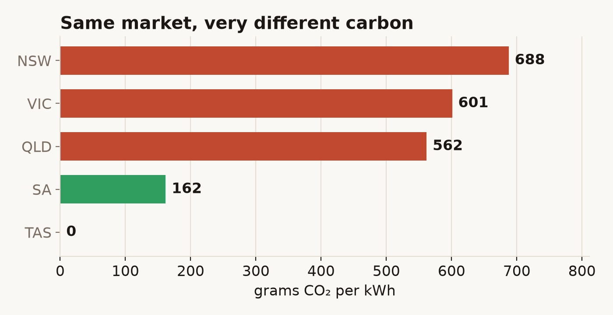

The problem
A kilowatt-hour isn't a fixed thing. Run your dishwasher at noon and it might be three-quarters wind and solar; run it at dinnertime and it's mostly coal. Across a day the carbon behind the same wall socket can more than double. None of that is visible — the meter shows cents, never grams.
Grid Lens makes it visible. It's a live read on Australia's National Electricity Market — the grid for the five eastern states — answering two plain questions: how green is the grid right now, and when is it greenest.
Finding 1 — same market, wildly different carbon
The five regions trade into one market, yet what comes out of the wall is nothing alike. On a recent winter afternoon Tasmania was running at zero grams (all hydro) while New South Wales sat near 690 — a coal grid. South Australia, which a decade ago was coal too, came in around 160 on wind and solar.

So "is electricity clean in Australia?" has no single answer; it depends entirely on which side of a state border you're standing on.
See the live regional breakdown →Finding 2 — there's a best time to use power
Averaged over the last month, the grid is cleanest in the late morning, when rooftop and grid-scale solar peak together and push the coal and gas fleet down. It's dirtiest in the evening, after the sun drops and demand climbs for cooking and heating. The gap is large enough to matter: shifting a load like a dishwasher or an EV charge from 7pm to 11am is a real cut in emissions, for free.

What I built
A self-refreshing dashboard. A small pipeline pulls the live generation mix, demand, price and emissions from the market operator's open data several times a day, works out the carbon intensity, and writes it into a static page that renders the lot — the live mix, a 48-hour rhythm, the five regions, and a four-month trend. No server, no login, nothing to pay; it just stays current.
Electricity has a time and a place. The same socket swings from near-clean to coal-heavy across a day, and from zero to seven hundred grams across a state line — and almost nobody can see it happening. How the carbon number is worked out →